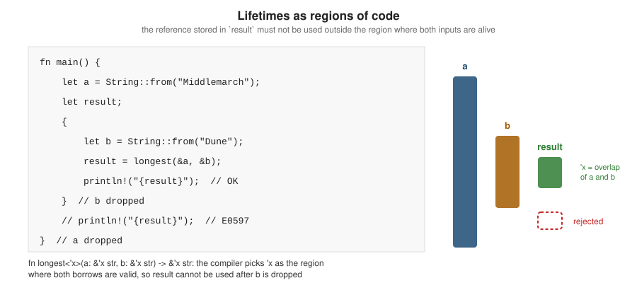

Lifetimes
|
This content was generated with the assistance of AI and should be verified against the official documentation before being relied on in production. |
This page is written against Rust 1.99.0 and the 2024 edition, checked on 2026-10-06. A lifetime is the region of code during which a reference is valid. The borrow checker (see Borrowing & References) computes lifetimes for every reference; most of the time you never write them, because the compiler infers them inside function bodies and elides them in common signatures. You write lifetime annotations when a signature or a type must state how the lifetimes of several references relate. Annotations never change how long a value lives — they describe constraints that the compiler then checks.
Why lifetimes exist
Consider a function that returns the longer of two string slices. The returned reference points into one of the arguments, but the compiler cannot know which from the signature alone, so it cannot check callers:
fn longest(a: &str, b: &str) -> &str { // error[E0106]: missing lifetime specifier
if a.len() >= b.len() { a } else { b }
}
fn main() {
println!("{}", longest("Middlemarch", "Dune"));
}Source: Error E0106
# error[E0106]: missing lifetime specifier
# --> src/main.rs:1:33
# |
# 1 | fn longest(a: &str, b: &str) -> &str {
# | ---- ---- ^ expected named lifetime parameter
# |
# = help: this function's return type contains a borrowed value, but the signature does not say whether it is
# borrowed from `a` or `b`
# help: consider introducing a named lifetime parameter
# |
# 1 | fn longest<'a>(a: &'a str, b: &'a str) -> &'a str {Annotation syntax
Lifetime parameters are named with an apostrophe and a short lowercase name ('a, 'de), declared in angle
brackets like generic type parameters, and written after the & of a reference: &'a T, &'a mut T. The fix the
compiler suggests says: "there is some lifetime 'a; both arguments live at least that long, and the result is
valid for that long too".
fn longest<'a>(a: &'a str, b: &'a str) -> &'a str {
if a.len() >= b.len() { a } else { b }
}
fn main() {
let a = String::from("Middlemarch");
let result;
{
let b = String::from("Dune");
result = longest(&a, &b);
println!("{result}"); // fine: both a and b are alive
}
// println!("{result}"); // would not compile: `b` does not live long enough (E0597)
}At each call site the compiler picks the concrete 'a as the intersection of the regions where both arguments are
valid. The result therefore cannot be used after the shorter-lived argument is dropped:

A signature only needs to relate the lifetimes that matter. If the result can only come from a, say so and b
needs no relation:
fn first_word<'a>(text: &'a str, _separator: &str) -> &'a str {
text.split(' ').next().unwrap_or(text)
}
fn main() {
let title = String::from("Dune Messiah");
let word;
{
let sep = String::from(" ");
word = first_word(&title, &sep);
} // `sep` dropped: fine, the result does not borrow from it
println!("{word}");
}Returning a reference to a local is impossible to annotate, because no caller-provided lifetime covers it (error
E0515, "cannot return reference to local variable"). Return an owned value (String, Vec<T>) instead.
The elision rules
Writing lifetimes on every reference would be tedious, so the compiler applies three elision rules to function and method signatures. Lifetimes on inputs are input lifetimes; on the return type, output lifetimes.
-
Each elided lifetime in the parameters becomes a distinct lifetime parameter.
-
If there is exactly one input lifetime (elided or not), it is assigned to all elided output lifetimes.
-
If there are several input lifetimes but one of them is
&selfor&mut self, the lifetime ofselfis assigned to all elided output lifetimes.
If the rules do not determine every output lifetime, an annotation is required (E0106).
| Written | After elision | Rule |
|---|---|---|
|
|
1 |
|
|
1, 2 |
|
|
1, 3 |
|
ambiguous: annotation required |
— |
Elision also applies in impl headers and to trait objects (Box<dyn Trait> means Box<dyn Trait + 'static>,
and &'a dyn Trait means &'a (dyn Trait + 'a)). The anonymous lifetime '_ makes an elided lifetime visible
without naming it, which helps readers: fn titles(&self) -> Iter<'_, String>. The elided_lifetimes_in_paths
lint (part of rust_2018_idioms) asks for '_ in such paths.
Lifetimes in structs and impl blocks
A struct that holds a reference must declare a lifetime parameter, and an instance cannot outlive the data it borrows. This is useful for short-lived views, parsers and iterators that avoid copying:
/// A view of one line of a CSV export, borrowing from the input text.
struct Record<'a> {
isbn: &'a str,
title: &'a str,
}
impl<'a> Record<'a> {
fn parse(line: &'a str) -> Option<Self> {
let (isbn, title) = line.split_once(',')?;
Some(Record { isbn: isbn.trim(), title: title.trim() })
}
// Elision rule 3: the result borrows from `self`, which is fine here...
fn label(&self) -> String {
format!("{} [{}]", self.title, self.isbn)
}
// ...but returning `&'a str` says the result borrows from the original input,
// so it may outlive the Record itself.
fn title(&self) -> &'a str {
self.title
}
}
fn main() {
let export = String::from("9780441013593, Dune\n9780141439518, Emma");
let titles: Vec<&str> = export.lines().filter_map(Record::parse).map(|r| r.title()).collect();
println!("{titles:?}"); // the Records are gone, the &str still borrow `export`
if let Some(r) = Record::parse("9780679732242, Beloved") {
println!("{}", r.label());
}
}Structs with references are powerful but contagious: every type that contains a Record<'a> must also carry 'a.
For long-lived data — application state, values sent to other threads, anything stored in a cache — prefer owned
fields (String, Arc<str>). A struct cannot hold a reference to one of its own fields (a self-referential
struct); see Pin & Unpin.
'static and T: 'static
'static is the lifetime of the whole program. A &'static T points to data that is never freed: string
literals, static items, and memory leaked with Box::leak.
A bound T: 'static means something different: the type T contains no references with a shorter lifetime
than 'static. Every owned type satisfies it — String, Vec<u8>, i32 — because they contain no references at
all. That is why std::thread::spawn and tokio::spawn require F: 'static: the task may outlive the current
function, so it must not borrow its locals, but it may own anything.
use std::fmt::Debug;
fn keep_forever<T: Debug + Send + 'static>(value: T) -> std::thread::JoinHandle<()> {
std::thread::spawn(move || println!("{value:?}"))
}
fn main() {
let owned = String::from("Dune");
keep_forever(owned).join().unwrap(); // String: 'static -- it owns its data
keep_forever("literal").join().unwrap(); // &'static str: 'static
let local = String::from("Emma");
// keep_forever(&local); // would not compile: `local` does not live long enough (E0597)
keep_forever(local.clone()).join().unwrap();
}Source: Rust by Example: Static
When a compiler message says "the parameter type T may not live long enough" and suggests T: 'static, the real
question is usually whether you should pass owned data, use scoped threads (thread::scope, which allows borrowing),
or share with Arc.
Lifetime bounds and implied bounds
Lifetimes can be constrained like type parameters:
-
'a: 'b, read as'aoutlives'b—'alasts at least as long as'b; -
T: 'a— every reference insideTlives at least as long as'a.
Many bounds are implied and do not need to be written: a parameter of type &'a T already implies T: 'a
(a reference cannot outlive what it points to), and a struct field &'a T implies the same for the struct.
struct Shelf<'a, T> {
items: &'a [T], // implies T: 'a
}
// `'long: 'short` lets us return the longer-lived reference as the shorter one.
fn pick<'short, 'long: 'short>(fallback: &'short str, preferred: Option<&'long str>) -> &'short str {
preferred.unwrap_or(fallback)
}
fn main() {
let items = [1, 2, 3];
let shelf = Shelf { items: &items };
let fallback = String::from("untitled");
println!("{} {}", shelf.items.len(), pick(&fallback, Some("Dune")));
}Subtyping and variance
Lifetimes introduce subtyping into Rust: if 'long: 'short, then &'long T is a subtype of &'short T — a
reference that is valid for longer can be used where a shorter one is expected. That is why a &'static str can be
passed to any function taking &'a str.
Variance describes how subtyping of a type’s parameter carries over to the type itself:
| Type | Variance in 'a / T |
Consequence |
|---|---|---|
|
covariant / covariant |
a longer-lived reference or a more specific |
|
covariant / invariant |
|
|
covariant |
behave like the value they hold |
|
invariant |
interior mutability allows writes through |
|
contravariant in |
a function accepting more general arguments can stand in |
|
covariant |
used to declare the variance of a type that stores |
Invariance of &mut T is what prevents this unsound program — if &mut &'static str could become &mut &'a str,
you could store a short-lived string where a 'static one is expected:
fn overwrite<'a>(target: &mut &'a str, value: &'a str) {
*target = value;
}
fn main() {
let mut forever: &'static str = "Dune";
{
let temporary = String::from("Emma");
overwrite(&mut forever, &temporary); // error[E0597]: `temporary` does not live long enough
}
println!("{forever}");
}Variance is computed automatically from a type’s fields. It mainly matters when you write generic containers with raw
pointers or PhantomData (see Generics & Const
Generics) and when an error mentions that a type "is invariant over the parameter". Azam (Advanced Rust, chapter
6) discusses variance at length; the Reference’s "Subtyping and Variance" chapter is the normative source.
Higher-ranked trait bounds: for<'a>
Sometimes a bound must hold for every lifetime, not one chosen by the caller — typically for closures that receive
a reference created inside the function. The syntax is for<'a>, a higher-ranked trait bound (HRTB):
fn apply_to_titles<F>(titles: &[String], f: F) -> Vec<usize>
where
F: for<'a> Fn(&'a str) -> usize, // f must accept a &str of *any* lifetime
{
titles.iter().map(|t| f(t.as_str())).collect()
}
fn main() {
let titles = vec![String::from("Dune"), String::from("Middlemarch")];
println!("{:?}", apply_to_titles(&titles, |s| s.len())); // [4, 11]
}You rarely write for<'a> explicitly: the Fn(&str) -> usize sugar already means for<'a> Fn(&'a str) -> usize.
It appears in bounds on traits with lifetime parameters, such as for<'de> Deserialize<'de> (which serde provides
as DeserializeOwned).
impl Trait capture rules and use<..> (2024 edition)
A function returning impl Trait (return-position impl Trait, RPIT) returns a hidden type. The hidden type may
borrow from the arguments, and the question is which generic parameters and lifetimes it is allowed to capture.
-
Until the 2021 edition, RPIT in free functions captured all type parameters but no lifetimes unless they appeared in the bounds, which forced the
impl Trait + '_or "Captures trick" workarounds. -
In the 2024 edition, RPIT captures all in-scope generic parameters, including lifetimes, by default. That is usually what you want.
-
When you want to capture less, list exactly what is captured with a precise capturing bound
use<..>(stable since 1.82).
// 2024: the returned iterator implicitly captures the lifetime of `titles`.
fn long_titles(titles: &[String], min: usize) -> impl Iterator<Item = &String> {
titles.iter().filter(move |t| t.len() >= min)
}
// The result does not borrow from `prefix`: say so with use<..>, so callers can drop `prefix` early.
fn numbered<'a>(titles: &'a [String], prefix: &str) -> impl Iterator<Item = String> + use<'a> {
let prefix = prefix.to_owned();
titles.iter().enumerate().map(move |(i, t)| format!("{prefix}{i}: {t}"))
}
fn main() {
let titles = vec![String::from("Dune"), String::from("Middlemarch")];
println!("{:?}", long_titles(&titles, 5).collect::<Vec<_>>());
let lines = {
let prefix = String::from("#");
numbered(&titles, &prefix) // fine: the iterator does not capture `prefix`'s lifetime
};
for line in lines {
println!("{line}");
}
}cargo fix --edition adds use<..> bounds where the new default would capture more than the old code did. In
traits, impl Trait in return position (RPITIT, 1.75) always captured all lifetimes.
Reading lifetime errors
| Error | How to read it |
|---|---|
E0106 missing lifetime specifier |
a returned or stored reference could come from more than one place: add a lifetime that names the source, or return an owned value |
E0597 borrowed value does not live long enough |
the referent is dropped while a reference is still used: move the owner to an outer scope or own the data |
E0515 cannot return reference to local variable |
return the owned value instead |
E0621 explicit lifetime required in the type of … |
the
signature promises |
"lifetime may not live long enough" |
a value with one lifetime is returned or stored where a longer one is
required; check which parameter the result actually borrows from, and whether a |
"the parameter type |
a generic value is stored somewhere requiring |
Older compilers reported many of these as E0495 ("cannot infer an appropriate lifetime"); since NLL became the only borrow checker (Rust 1.63), that code is no longer emitted and the messages name the conflicting lifetimes directly.
Where the books are outdated
Azam (Advanced Rust, chapter 6) covers concrete versus generic lifetimes, 'static, elision, bounds, implied bounds
and variance; it predates the 2024 edition’s RPIT capture rules and does not cover use<..> precise capturing
(1.82). Code following the older capture rules may carry impl Trait + '_ bounds that are now redundant.
References
-
The Rust Programming Language: Validating References with Lifetimes
-
Rust by Example: Lifetimes (explicit annotation, functions, methods, structs, bounds, coercion, static, elision)